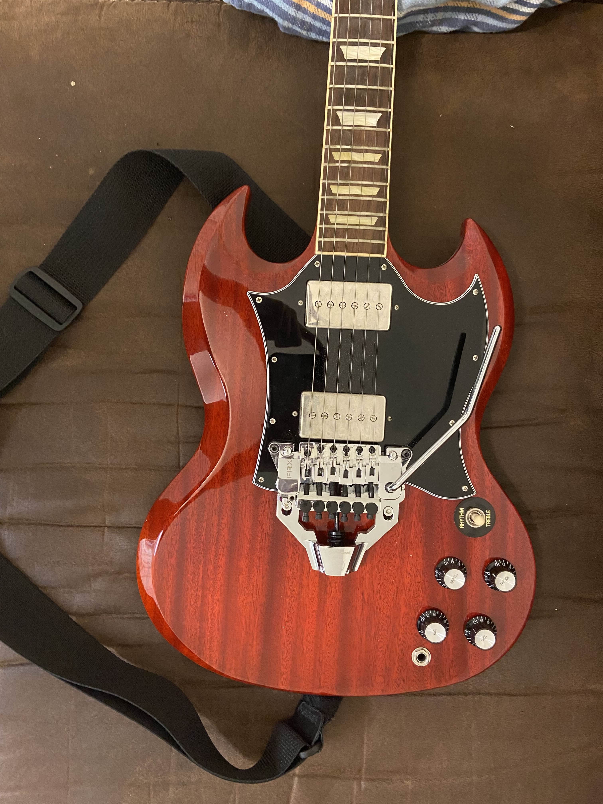

Name: Matthew Brandon Storey
Education: Bachelor of Science: Electrical Engineering
I worked as an after school teacher and handyman throughout school semesters and during summer and winter breaks. I taught children of grades Kindergarten through 5th. During the summer camp program, I was a councelor for recreational activities and was responsible for slideshow presentations.
Over the course of a summer, I dissassembled, rewired, and reassembled a pair of humbuckerpickups for an electric guitar for personal use. This involved soldering, splitting wires in the humbucker that were incompatible with the ones in the guitar, and addition of a Floyd Rose FRX Tremelo System.
